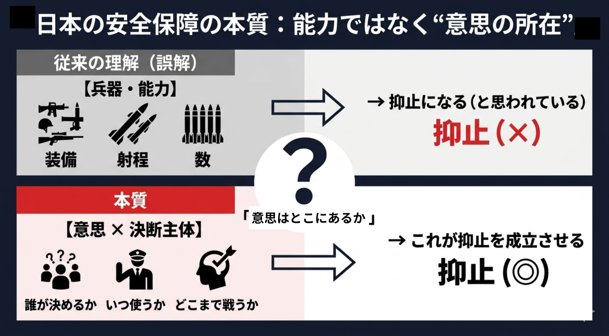

イスカンデル級ミサイルが日本近海から発射された場合、着弾まで4〜6分。探知から迎撃判断まで、実質の意思決定時間は1〜2分に過ぎない。この数字の前で専守防衛を論じるとき、問われているのは兵器の射程でも憲法解釈でもない。最初の一撃を、誰が、何分以内に決断するのかという、政治の構造問題だ。
専守防衛を守るか見直すか。この問いの立て方自体が、すでに本質から少し外れている。問題は制度の名称ではない。日本が自らを「戦う主体」として位置づけるのか、それとも最終的には他者に守られる「客体」として安全保障を設計し続けるのか——その根本の選択だ。
戦後日本の安全保障は、日米同盟と専守防衛の組み合わせで成立してきた。日本が「盾」を担い、米国が「矛」を担う。この構図は能力の分業であると同時に、責任の分業でもあった。日本は「どこまで戦うか」「いつ反撃するか」「危機の閾値をどこに置くか」という国家の最重部分を、制度的にも心理的にも米国に委ねてきた。
抑止とは兵器の性能表ではない。能力と意思、その接続の明確さによって成立する政治的作用だ。どれほど装備を整えても、誰が決断するのかが曖昧であれば抑止は完成しない。逆に、能力が限られていても、使用条件と決断主体が明確であれば、相手はその国の反応を織り込まざるを得ない。
専守防衛は本来、憲法条文そのものではなく、戦後政治が積み上げた政策解釈である。「攻撃は受けてから」「能力は最小限」「行動は抑制的」という三重の制約として固定化されていくうちに、国民を守るために何が最適かではなく、政治的に何が最も説明しやすいかを優先する装置に変質してはいないか。
変質した専守防衛は、現代戦の前で致命的に脆い。飽和攻撃、極超音速兵器（マッハ10以上）、無人機、サイバー攻撃——戦争の最初の数分で指揮・通信・基地機能の麻痺が完了する。「まず被害を受け、それから対処する」という発想は、慎重さではなく遅延である。
反論は避けられない。昭和前期、軍事合理性が政治を呑み込み国家を破局へ導いた苦い経験がある。だが見極めるべきは、抑制と受動の違いだ。必要なのは力を持たないことではなく、力の所在と使用条件を文民統制の下で明示することである。曖昧さはしばしば穏健に見える。だが実際には、責任の所在を霧の中に隠すだけだ。

では再定義の中身はどうあるべきか。反撃条件を固定的な数値で公開すれば、相手はその直下で行動を最適化する。だからこそ「条件の階層化」が必要だ——発動の論理は示すが、発動の瞬間は秘匿する。国家存立危機や大規模ミサイル攻撃は明示の領域とし、指揮系統への攻撃兆候や発射準備段階の特定は非明示とする。見せるのは精密な閾値ではなく、「この線を越えれば必ず動く」という政治意思の不可逆性だ。
指揮系統も整理が要る。最終命令権（内閣総理大臣）と作戦指揮（統合作戦司令官）は分離されなければならない。「誰が命令するか」と「誰が戦うか」は一致しない。政治は戦争開始を決め、軍は戦い方を決める。これを混同すれば機能不全に陥る。平時は自衛隊統合作戦司令部と米インド太平洋軍が並列・常時接続し、有事は任務ごとに指揮権を割り当てる——防空は日本主導、打撃作戦は日米共同という形がそのモデルだ。
同盟と自立は対立概念ではない。自立なき同盟は従属であり、同盟なき自立は孤立だ。トランプ政権は「自分で守れ」という意味のことを繰り返している。この圧力は、日本にとって同盟を「相互に縛り合うもの」から「相互に補完するもの」へ進化させる機会でもある。日本が単独で初動を決断し、米国がそれを支援する形が現実のシナリオとして浮上しつつある以上、「最後は米国が決める」という安心に寄りかかるなら、それは同盟重視ではなく同盟への思考停止だ。